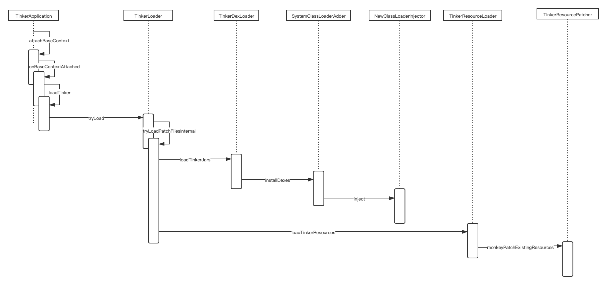

解析 Tinker 是如何实现热修复的
简介
Tinker 是微信团队开源的一款 android 热修复框架，它的使用流程大体是：
- client 安装 V1.apk
- 提交了一些 hotfix，打包出 V2.apk
- 利用 Tinker 提供的差分工具，在 server 计算出补丁包 patch1.apk，并下发给 client
- client 收到补丁包后，在后台给 V1.apk 打上 patch1.apk 得到 V2.apk（V1.apk + patch1.apk = V2.apk）
- app 在下次启动时，将加载 V2.apk
它的工作目录大概是这样的：
- /data/user/0/tinker.sample.android/tinker
- info.lock
- patch.info
- patch-d1ec6aa9
- patch-d1ec6aa9.apk
- dex
- tinker_classN.apk
- oat
- tinker_classN.apk.cur.prof
- x86
- tinker_classN.vdex
- tinker_classN.odex
- res
- resources.apk
- lib
- lib
- armeabi
- libmmkv.so
- ...
- odex注入代码和资源的时序图如下

代码的热更新
使用 TinkerClassLoader
Tinker 代码热更新的原理是用 TinkerClassLoader 替代原有的 ClassLoader，这样 V2 版本的类就会被优先加载，从而实现「覆盖」旧代码的功能
TinkerClassLoader 打破了传统的双亲委派模式，其内部相当于有两个 ClassLoader
TinkerClassLoader，包含 V2 版本的代码mOriginAppClassLoader，android app 的类加载器，包含 V1 版本的代码
加载类的时候，首先从自身加载（也就是优先加载 V2 版本的代码），然后再从 app 的类加载器中加载（V1 版本的代码就会被 V2 所覆盖）
public final class TinkerClassLoader extends PathClassLoader {
private final ClassLoader mOriginAppClassLoader;
TinkerClassLoader(String dexPath, File optimizedDir, String libraryPath, ClassLoader originAppClassLoader) {
super("", libraryPath, ClassLoader.getSystemClassLoader());
mOriginAppClassLoader = originAppClassLoader;
injectDexPath(this, dexPath, optimizedDir);
}
@Override
protected Class<?> findClass(String name) throws ClassNotFoundException {
Class<?> cl = null;
try {
cl = super.findClass(name);
} catch (ClassNotFoundException ignored) {
cl = null;
}
if (cl != null) {
return cl;
} else {
return mOriginAppClassLoader.loadClass(name);
}
}
private static void injectDexPath(ClassLoader cl, String dexPath, File optimizedDir) {
try {
final List<File> dexFiles = new ArrayList<>(16);
for (String oneDexPath : dexPath.split(":")) {
if (oneDexPath.isEmpty()) {
continue;
}
dexFiles.add(new File(oneDexPath));
}
if (!dexFiles.isEmpty()) {
SystemClassLoaderAdder.injectDexesInternal(cl, dexFiles, optimizedDir);
}
} catch (Throwable thr) {
throw new TinkerRuntimeException("Fail to create TinkerClassLoader.", thr);
}
}
}创建 TinkerClassLoader
ClassLoader NewClassLoaderInjector.inject(Application app, ClassLoader oldClassLoader,
File dexOptDir, boolean useDLC, List<File> patchedDexes) throws Throwable {
final String[] patchedDexPaths = new String[patchedDexes.size()];
for (int i = 0; i < patchedDexPaths.length; ++i) {
patchedDexPaths[i] = patchedDexes.get(i).getAbsolutePath();
}
final ClassLoader newClassLoader = createNewClassLoader(oldClassLoader, dexOptDir, useDLC, patchedDexPaths);
doInject(app, newClassLoader);
return newClassLoader;
}
ClassLoader NewClassLoaderInjector.createNewClassLoader(ClassLoader oldClassLoader, File dexOptDir,
boolean useDLC, String... patchDexPaths) throws Throwable {
final Field pathListField = findField(Class.forName("dalvik.system.BaseDexClassLoader", false, oldClassLoader), "pathList");
final Object oldPathList = pathListField.get(oldClassLoader);
// V2 版本的 dex 列表（apk 包），组合为字符串
final StringBuilder dexPathBuilder = new StringBuilder();
final boolean hasPatchDexPaths = patchDexPaths != null && patchDexPaths.length > 0;
if (hasPatchDexPaths) {
for (int i = 0; i < patchDexPaths.length; ++i) {
if (i > 0) {
dexPathBuilder.append(File.pathSeparator);
}
dexPathBuilder.append(patchDexPaths[i]);
}
}
final String combinedDexPath = dexPathBuilder.toString();
// 把 V1 版本的 so 文件目录组合为字符串
// so 文件目录其实一直是固定的，比如上面提到的 /data/app/tinker.sample.android-WQAlCXU0G15OGs7jKsCrcw==/lib/x86
// 这是因为 V2 版本的 so 文件被释放到这个目录，把 V1 版本的文件给覆盖掉了（在合成新版本的章节会介绍）
final Field nativeLibraryDirectoriesField = findField(oldPathList.getClass(), "nativeLibraryDirectories");
List<File> oldNativeLibraryDirectories = null;
if (nativeLibraryDirectoriesField.getType().isArray()) {
oldNativeLibraryDirectories = Arrays.asList((File[]) nativeLibraryDirectoriesField.get(oldPathList));
} else {
oldNativeLibraryDirectories = (List<File>) nativeLibraryDirectoriesField.get(oldPathList);
}
final StringBuilder libraryPathBuilder = new StringBuilder();
boolean isFirstItem = true;
for (File libDir : oldNativeLibraryDirectories) {
if (libDir == null) {
continue;
}
if (isFirstItem) {
isFirstItem = false;
} else {
libraryPathBuilder.append(File.pathSeparator);
}
libraryPathBuilder.append(libDir.getAbsolutePath());
}
final String combinedLibraryPath = libraryPathBuilder.toString();
// 构造 TinkerClassLoader
ClassLoader result = null;
if (useDLC && Build.VERSION.SDK_INT >= 27) {
result = new DelegateLastClassLoader(combinedDexPath, combinedLibraryPath, ClassLoader.getSystemClassLoader());
final Field parentField = ClassLoader.class.getDeclaredField("parent");
parentField.setAccessible(true);
parentField.set(result, oldClassLoader);
} else {
result = new TinkerClassLoader(combinedDexPath, dexOptDir, combinedLibraryPath, oldClassLoader);
}
// 'EnsureSameClassLoader' mechanism which is first introduced in Android O
// may cause exception if we replace definingContext of old classloader.
if (Build.VERSION.SDK_INT < 26) {
findField(oldPathList.getClass(), "definingContext").set(oldPathList, result);
}
return result;
}替代 PathClassLoader
PathClassLoader 结构如下，因为没有公开方法设置 optimizeDir（odex 文件目录，后续会讲到 Tinker 触发 dex 优化时把文件输出目录设置在 patch dir 内），需要通过反射重新构造 dexElements
- dalvik.system.PathClassLoader（继承自 BaseDexClassLoader）
- pathList: DexPathList
- nativeLibraryDirectories: File[]
- 0
- /data/app/tinker.sample.android-WQAlCXU0G15OGs7jKsCrcw==/lib/x86
- dexElements: Element[]
- 0
- path: File = /data/app/tinker.sample.android-WQAlCXU0G15OGs7jKsCrcw==/base.apk
- dexFile: DexFile = /data/app/tinker.sample.android-WQAlCXU0G15OGs7jKsCrcw==/base.apk
- initialized: Boolean = false
- urlHandler: ClassPathURLStreamHandler = null不同 android 版本里 app class loader 的实现和结构可能是不同的，需要分开处理；Tinker 整理出了 V23、V19、V14 和 V4 四个版本
static void SystemClassLoaderAdder.injectDexesInternal(ClassLoader cl, List<File> dexFiles, File optimizeDir) throws Throwable {
if (Build.VERSION.SDK_INT >= 23) {
V23.install(cl, dexFiles, optimizeDir);
} else if (Build.VERSION.SDK_INT >= 19) {
V19.install(cl, dexFiles, optimizeDir);
} else if (Build.VERSION.SDK_INT >= 14) {
V14.install(cl, dexFiles, optimizeDir);
} else {
V4.install(cl, dexFiles, optimizeDir);
}
}
private static final class V23 {
private static void install(ClassLoader loader, List<File> additionalClassPathEntries, File optimizedDirectory)
throws IllegalArgumentException, IllegalAccessException,
NoSuchFieldException, InvocationTargetException, NoSuchMethodException, IOException {
/* The patched class loader is expected to be a descendant of
* dalvik.system.BaseDexClassLoader. We modify its
* dalvik.system.DexPathList pathList field to append additional DEX
* file entries.
*/
Field pathListField = ShareReflectUtil.findField(loader, "pathList");
Object dexPathList = pathListField.get(loader);
ArrayList<IOException> suppressedExceptions = new ArrayList<IOException>();
ShareReflectUtil.expandFieldArray(dexPathList, "dexElements", makePathElements(dexPathList,
new ArrayList<File>(additionalClassPathEntries), optimizedDirectory,
suppressedExceptions));
if (suppressedExceptions.size() > 0) {
for (IOException e : suppressedExceptions) {
ShareTinkerLog.w(TAG, "Exception in makePathElement", e);
throw e;
}
}
}
/**
* A wrapper around
* {@code private static final dalvik.system.DexPathList#makePathElements}.
*/
private static Object[] makePathElements(
Object dexPathList, ArrayList<File> files, File optimizedDirectory,
ArrayList<IOException> suppressedExceptions)
throws IllegalAccessException, InvocationTargetException, NoSuchMethodException {
Method makePathElements;
try {
makePathElements = ShareReflectUtil.findMethod(dexPathList, "makePathElements", List.class, File.class, List.class);
} catch (NoSuchMethodException e) {
ShareTinkerLog.e(TAG, "NoSuchMethodException: makePathElements(List,File,List) failure");
try {
makePathElements = ShareReflectUtil.findMethod(dexPathList, "makePathElements", ArrayList.class, File.class, ArrayList.class);
} catch (NoSuchMethodException e1) {
ShareTinkerLog.e(TAG, "NoSuchMethodException: makeDexElements(ArrayList,File,ArrayList) failure");
try {
ShareTinkerLog.e(TAG, "NoSuchMethodException: try use v19 instead");
return V19.makeDexElements(dexPathList, files, optimizedDirectory, suppressedExceptions);
} catch (NoSuchMethodException e2) {
ShareTinkerLog.e(TAG, "NoSuchMethodException: makeDexElements(List,File,List) failure");
throw e2;
}
}
}
return (Object[]) makePathElements.invoke(dexPathList, files, optimizedDirectory, suppressedExceptions);
}
}注入 TinkerClassLoader
注入 TinkerClassLoader，有这么几个地方：
Thread.getContextClassLoader()Application.mBase(ContextImpl).mClassLoaderApplication.mBase(ContextImpl).mPackageInfo(LoadedApk).mClassLoaderResources.mClassLoaderResources.mDrawableInflater(DrawableInflater).mClassLoader
void NewClassLoaderInjector.doInject(Application app, ClassLoader classLoader) throws Throwable {
Thread.currentThread().setContextClassLoader(classLoader);
final Context baseContext = (Context) findField(app.getClass(), "mBase").get(app);
try {
findField(baseContext.getClass(), "mClassLoader").set(baseContext, classLoader);
} catch (Throwable ignored) {
// There's no mClassLoader field in ContextImpl before Android O.
// However we should try our best to replace this field in case some
// customized system has one.
}
final Object basePackageInfo = findField(baseContext.getClass(), "mPackageInfo").get(baseContext);
findField(basePackageInfo.getClass(), "mClassLoader").set(basePackageInfo, classLoader);
if (Build.VERSION.SDK_INT < 27) {
final Resources res = app.getResources();
try {
findField(res.getClass(), "mClassLoader").set(res, classLoader);
final Object drawableInflater = findField(res.getClass(), "mDrawableInflater").get(res);
if (drawableInflater != null) {
findField(drawableInflater.getClass(), "mClassLoader").set(drawableInflater, classLoader);
}
} catch (Throwable ignored) {
// Ignored.
}
}
}上面列出的几个 ClassLoader，其中有两个是比较重要的
Application.mBase(ContextImpl).mClassLoader 是在实例化 ApplicationLike 时用到；为了能够加载到 V2 版本的代码，app application 必须设置为 TinkerApplication（它是 Tinker 库的类，只要不更新 Tinker 版本，业务的迭代更新一般不会改动到它，所以它是比较稳定不变的）；在注入 TinkerClassLoader 后，通过反射调用业务方的 ApplicationLike（业务代码较常变动）
void TinkerApplication.attachBaseContext(Context base)
void TinkerApplication.onBaseContextAttached(Context base, long applicationStartElapsedTime, long applicationStartMillisTime) {
loadTinker(); // 先注入 TinkerClassLoader
mCurrentClassLoader = base.getClassLoader(); // Application.mBase(ContextImpl).mClassLoader
mInlineFence = createInlineFence(this, tinkerFlags, delegateClassName, tinkerLoadVerifyFlag,
applicationStartElapsedTime, applicationStartMillisTime, tinkerResultIntent);
}
Handler TinkerApplication.createInlineFence(Application app, int tinkerFlags, String delegateClassName, boolean tinkerLoadVerifyFlag,
long applicationStartElapsedTime, long applicationStartMillisTime, Intent resultIntent) {
// delegateClassName 比如 tinker.sample.android.app.SampleApplicationLike
// 此时 mCurrentClassLoader 是 TinkerClassLoader
final Class<?> delegateClass = Class.forName(delegateClassName, false, mCurrentClassLoader);
// ...
}Application.mBase(ContextImpl).mPackageInfo(LoadedApk).mClassLoader 在实例化 Activity 时会用到，在这篇文章里可以找到入口点：
ActivityThread.handleLaunchActivity(ActivityClientRecord r, PendingTransactionActions pendingActions, Intent customIntent)=
ActivityThread.performLaunchActivity(ActivityClientRecord r, Intent customIntent) {
// ...
ContextImpl appContext = createBaseContextForActivity(r);
Activity activity = null;
try {
// 用这个 cl 加载目标 Activity 类；而这个 cl 是上面 ContextImpl 的
java.lang.ClassLoader cl = appContext.getClassLoader();
activity = mInstrumentation.newActivity(cl, component.getClassName(), r.intent);
// ...
}
Instrumentation.newActivity(ClassLoader cl, String className, Intent intent)
throws InstantiationException, IllegalAccessException, ClassNotFoundException {
String pkg = intent != null && intent.getComponent() != null ? intent.getComponent().getPackageName() : null;
return getFactory(pkg).instantiateActivity(cl, className, intent);
}
AppComponentFactory.instantiateActivity(ClassLoader cl, String className, Intent intent)
throws InstantiationException, IllegalAccessException, ClassNotFoundException {
return (Activity) cl.loadClass(className).newInstance();
}
ActivityThread.createBaseContextForActivity(ActivityClientRecord r) {
final int displayId;
try {
displayId = ActivityTaskManager.getService().getDisplayId(r.token);
} catch (RemoteException e) {
throw e.rethrowFromSystemServer();
}
ContextImpl appContext = ContextImpl.createActivityContext(this, r.packageInfo, r.activityInfo, r.token, displayId, r.overrideConfig);
// ...
}
ContextImpl.createActivityContext(ActivityThread mainThread, LoadedApk packageInfo, ActivityInfo activityInfo,
IBinder activityToken, int displayId, Configuration overrideConfiguration) {
if (packageInfo == null) throw new IllegalArgumentException("packageInfo");
String[] splitDirs = packageInfo.getSplitResDirs();
ClassLoader classLoader = packageInfo.getClassLoader(); // ContextImpl.getClassLoader() 来自于 LoadedApk.mClassLoader
// ...
ContextImpl context = new ContextImpl(null, mainThread, packageInfo, null, activityInfo.splitName, activityToken, null, 0, classLoader, null);
// ...
}资源的热更新
app resources
对于资源的热更新 Tinker 做了两块
一块是针对 app context 的，Tinker 用新的资源包（比如上面说到的 /data/user/0/tinker.sample.android/tinker/patch-d1ec6aa9/res/resources.apk）构造出一个新的 AssetManager，替换掉 Resources 里旧的 Resource.mResourcesImpl(ResourcesImpl).mAssets
TinkerResourceLoader.loadTinkerResources(TinkerApplication application, String directory, Intent intentResult)
// 资源热更新的逻辑在这里
TinkerResourcePatcher.monkeyPatchExistingResources(Context context, String externalResourceFile) throws Throwable {
// ... 创建一个新的 AssetManager，它指向新的资源包
if (((Integer) addAssetPathMethod.invoke(newAssetManager, externalResourceFile)) == 0) {
throw new IllegalStateException("Could not create new AssetManager");
}
// ...
for (WeakReference<Resources> wr : references) {
final Resources resources = wr.get();
if (resources == null) {
continue;
}
// 替换 Resources 里的 AssetManager
try {
//pre-N
assetsFiled.set(resources, newAssetManager);
} catch (Throwable ignore) {
// N
final Object resourceImpl = resourcesImplFiled.get(resources);
// for Huawei HwResourcesImpl
final Field implAssets = findField(resourceImpl, "mAssets");
implAssets.set(resourceImpl, newAssetManager);
}
// ...
}app context 里的 Resources 是在构造 app context 的同时通过 ResourcesManager.getResources 创建的，而且 ResourcesManager.mResourceReferences 会持有一个它的弱引用
ActivityThread.handleBindApplication(AppBindData data) {
// ... 实例化 ContextImpl 和 Application
app = data.info.makeApplication(data.restrictedBackupMode, null);
// ...
}
// 构造 app context（ContextImpl）和 Application
Application LoadedApk.makeApplication(boolean forceDefaultAppClass, Instrumentation instrumentation) {
// ...
ContextImpl appContext = ContextImpl.createAppContext(mActivityThread, this);
app = mActivityThread.mInstrumentation.newApplication(cl, appClass, appContext);
// ...
}
// 在构造 ContextImpl 时候会创建 Resources
ContextImpl LoadedApk.createAppContext(ActivityThread mainThread, LoadedApk packageInfo) {
return createAppContext(mainThread, packageInfo, null);
}
ContextImpl LoadedApk.createAppContext(ActivityThread mainThread, LoadedApk packageInfo, String opPackageName) {
if (packageInfo == null) throw new IllegalArgumentException("packageInfo");
ContextImpl context = new ContextImpl(null, mainThread, packageInfo, null, null, null, null, 0, null, opPackageName);
context.setResources(packageInfo.getResources());
context.mIsSystemOrSystemUiContext = isSystemOrSystemUI(context);
return context;
}
// 通过 ResourcesManager.getResources() 创建 Resources 实例时，ResourcesManager.mResourceReferences 会持有一个它的弱引用
Resources LoadedApk.getResources() {
if (mResources == null) {
final String[] splitPaths;
try {
splitPaths = getSplitPaths(null);
} catch (NameNotFoundException e) {
// This should never fail.
throw new AssertionError("null split not found");
}
mResources = ResourcesManager.getInstance().getResources(null, mResDir,
splitPaths, mOverlayDirs, mApplicationInfo.sharedLibraryFiles,
Display.DEFAULT_DISPLAY, null, getCompatibilityInfo(),
getClassLoader(), null);
}
return mResources;
}
ResourcesManager.getResources(...) {
Trace.traceBegin(Trace.TRACE_TAG_RESOURCES, "ResourcesManager#getResources");
final ResourcesKey key = new ResourcesKey(...);
classLoader = classLoader != null ? classLoader : ClassLoader.getSystemClassLoader();
if (activityToken != null) {
rebaseKeyForActivity(activityToken, key);
}
// Preload the ApkAssets required by the key to prevent performing heavy I/O while the
// ResourcesManager lock is held.
final ApkAssetsSupplier assetsSupplier = createApkAssetsSupplierNotLocked(key);
return createResources(activityToken, key, classLoader, assetsSupplier);
}
ResourcesManager.createResources(...) {
synchronized (this) {
ResourcesImpl resourcesImpl = findOrCreateResourcesImplForKeyLocked(key, apkSupplier);
if (resourcesImpl == null) {
return null;
}
if (activityToken != null) {
return createResourcesForActivityLocked(activityToken, classLoader, resourcesImpl, key.mCompatInfo);
} else {
return createResourcesLocked(classLoader, resourcesImpl, key.mCompatInfo);
}
}
}
ResourcesManager.createResourcesLocked(...) {
cleanupReferences(mResourceReferences, mResourcesReferencesQueue);
Resources resources = compatInfo.needsCompatResources() ? new CompatResources(classLoader) : new Resources(classLoader);
resources.setImpl(impl);
resources.setCallbacks(mUpdateCallbacks);
mResourceReferences.add(new WeakReference<>(resources, mResourcesReferencesQueue));
return resources;
}Application 创建后会调用 Application.attach，后续会触发 TinkerResourcePatcher.isResourceCanPatch 和 TinkerResourcePatcher.monkeyPatchExistingResources，从而把 ResourcesManager.mResourceReferences 里的 Resources 都修改掉
Instrumentation.newApplication(ClassLoader cl, String className, Context context)
throws InstantiationException, IllegalAccessException, ClassNotFoundException {
Application app = getFactory(context.getPackageName()).instantiateApplication(cl, className);
app.attach(context);
return app;
}
Application.attach(Context context) {
attachBaseContext(context);
mLoadedApk = ContextImpl.getImpl(context).mPackageInfo;
}
TinkerLoader.tryLoadPatchFilesInternal(TinkerApplication app, Intent resultIntent)
TinkerResourceLoader.checkComplete(Context context, String directory, ShareSecurityCheck securityCheck, Intent intentResult)
// 通过反射拿到 ResourcesManager.mResourceReferences
TinkerResourceLoader.isResourceCanPatch(Context context) throws Throwable {
// ...
// Iterate over all known Resources objects
if (SDK_INT >= KITKAT) {
//pre-N
// Find the singleton instance of ResourcesManager
final Class<?> resourcesManagerClass = Class.forName("android.app.ResourcesManager");
final Method mGetInstance = findMethod(resourcesManagerClass, "getInstance");
final Object resourcesManager = mGetInstance.invoke(null);
try {
Field fMActiveResources = findField(resourcesManagerClass, "mActiveResources");
final ArrayMap<?, WeakReference<Resources>> activeResources19 =
(ArrayMap<?, WeakReference<Resources>>) fMActiveResources.get(resourcesManager);
references = activeResources19.values();
} catch (NoSuchFieldException ignore) {
// N moved the resources to mResourceReferences
final Field mResourceReferences = findField(resourcesManagerClass, "mResourceReferences");
references = (Collection<WeakReference<Resources>>) mResourceReferences.get(resourcesManager);
}
} else {
final Field fMActiveResources = findField(activityThread, "mActiveResources");
final HashMap<?, WeakReference<Resources>> activeResources7 =
(HashMap<?, WeakReference<Resources>>) fMActiveResources.get(currentActivityThread);
references = activeResources7.values();
}
// ...
}local resources
另一块是针对局部 Context 的，比如 Activity，从Activity 启动流程时序图可以找到创建 Activity 的入口点
创建 Activity 的时候会创建并使用它自己的 Context，而且把 Context.getResources 指向从 ActivityThread.mPackages 里找到的资源目录，所以 Tinker 会在 monkeyPatchExistingResources 修改 ActivityThread.mPackages 指向新资源包
// 创建 Activity
ActivityThread.handleLaunchActivity ...
ActivityThread.performLaunchActivity(ActivityClientRecord r, Intent customIntent) {
ActivityInfo aInfo = r.activityInfo;
if (r.packageInfo == null) {
r.packageInfo = getPackageInfo(aInfo.applicationInfo, r.compatInfo, Context.CONTEXT_INCLUDE_CODE);
}
// ...
ContextImpl appContext = createBaseContextForActivity(r);
// ...
activity = mInstrumentation.newActivity(cl, component.getClassName(), r.intent);
// ...
activity.attach(appContext, this, getInstrumentation(), r.token,
r.ident, app, r.intent, r.activityInfo, title, r.parent,
r.embeddedID, r.lastNonConfigurationInstances, config,
r.referrer, r.voiceInteractor, window, r.configCallback,
r.assistToken);
// ...
}
// 创建 Activity ContextImpl，可以看到它的 Resources 是指向 ActivityClientRecord.packageInfo.getResDir() 的
// 而 ActivityClientRecord.packageInfo 在上面被赋值了
ContextImpl.createBaseContextForActivity(ActivityClientRecord r)
ContextImpl.createActivityContext(ActivityThread mainThread,
LoadedApk packageInfo, ActivityInfo activityInfo, IBinder activityToken, int displayId,
Configuration overrideConfiguration) {
// ...
ContextImpl context = new ContextImpl(null, mainThread, packageInfo, null,
activityInfo.splitName, activityToken, null, 0, classLoader, null);
// ...
context.setResources(resourcesManager.createBaseTokenResources(activityToken,
packageInfo.getResDir(),
splitDirs,
packageInfo.getOverlayDirs(),
packageInfo.getApplicationInfo().sharedLibraryFiles,
displayId,
overrideConfiguration,
compatInfo,
classLoader,
packageInfo.getApplication() == null ? null : packageInfo.getApplication().getResources().getLoaders()));
// ...
}
// ActivityClientRecord.packageInfo 是从 ActivityThread.mPackages 里取的
ActivityThread.getPackageInfo(String packageName, CompatibilityInfo compatInfo, int flags, int userId) {
final boolean differentUser = (UserHandle.myUserId() != userId);
ApplicationInfo ai = PackageManager.getApplicationInfoAsUserCached(
packageName,
PackageManager.GET_SHARED_LIBRARY_FILES
| PackageManager.MATCH_DEBUG_TRIAGED_MISSING,
(userId < 0) ? UserHandle.myUserId() : userId);
synchronized (mResourcesManager) {
WeakReference<LoadedApk> ref;
if (differentUser) {
// Caching not supported across users
ref = null;
} else if ((flags & Context.CONTEXT_INCLUDE_CODE) != 0) {
ref = mPackages.get(packageName);
} else {
ref = mResourcePackages.get(packageName);
}
LoadedApk packageInfo = ref != null ? ref.get() : null;
if (ai != null && packageInfo != null) {
if (!isLoadedApkResourceDirsUpToDate(packageInfo, ai)) {
List<String> oldPaths = new ArrayList<>();
LoadedApk.makePaths(this, ai, oldPaths);
packageInfo.updateApplicationInfo(ai, oldPaths);
}
if (packageInfo.isSecurityViolation() && (flags&Context.CONTEXT_IGNORE_SECURITY) == 0) {
throw new SecurityException(
"Requesting code from " + packageName
+ " to be run in process "
+ mBoundApplication.processName
+ "/" + mBoundApplication.appInfo.uid);
}
return packageInfo;
}
}
if (ai != null) {
return getPackageInfo(ai, compatInfo, flags);
}
return null;
}
// Tinker 将 ActivityThread.mPackages 里的 LoadedApk.mResDir 改为新的资源包
TinkerResourcePatcher.isResourceCanPatch(Context context) throws Throwable {
Class<?> activityThread = Class.forName("android.app.ActivityThread");
// ...
packagesFiled = findField(activityThread, "mPackages");
if (Build.VERSION.SDK_INT < 27) {
resourcePackagesFiled = findField(activityThread, "mResourcePackages");
}
// ...
}
TinkerResourcePatcher.monkeyPatchExistingResources(Context context, String externalResourceFile) throws Throwable {
if (externalResourceFile == null) {
return;
}
final ApplicationInfo appInfo = context.getApplicationInfo();
final Field[] packagesFields;
if (Build.VERSION.SDK_INT < 27) {
packagesFields = new Field[]{packagesFiled, resourcePackagesFiled};
} else {
packagesFields = new Field[]{packagesFiled};
}
for (Field field : packagesFields) {
final Object value = field.get(currentActivityThread);
for (Map.Entry<String, WeakReference<?>> entry : ((Map<String, WeakReference<?>>) value).entrySet()) {
final Object loadedApk = entry.getValue().get();
if (loadedApk == null) {
continue;
}
final String resDirPath = (String) resDir.get(loadedApk);
if (appInfo.sourceDir.equals(resDirPath)) {
resDir.set(loadedApk, externalResourceFile);
}
}
}
// ...
}